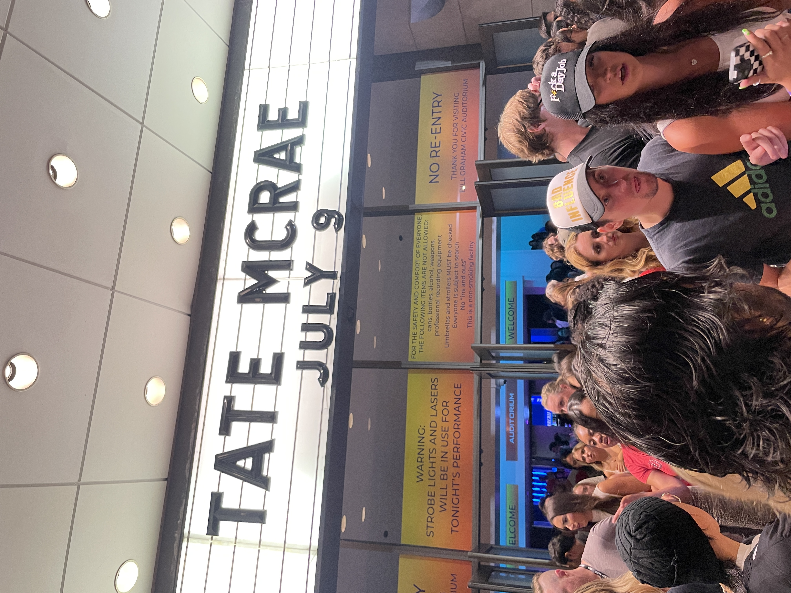
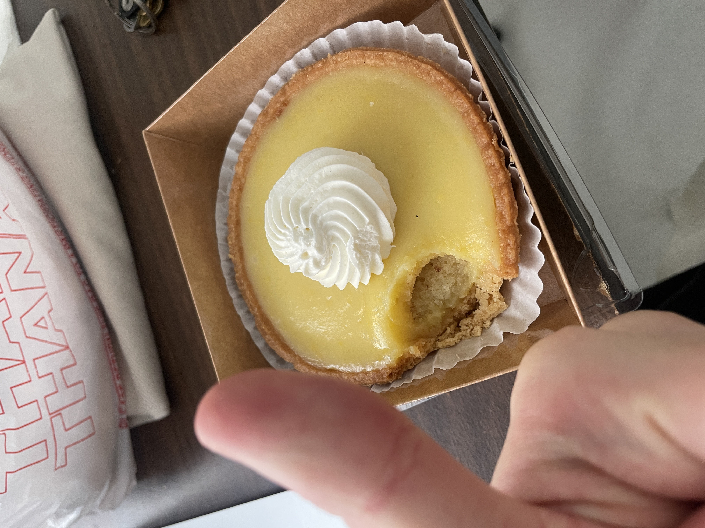
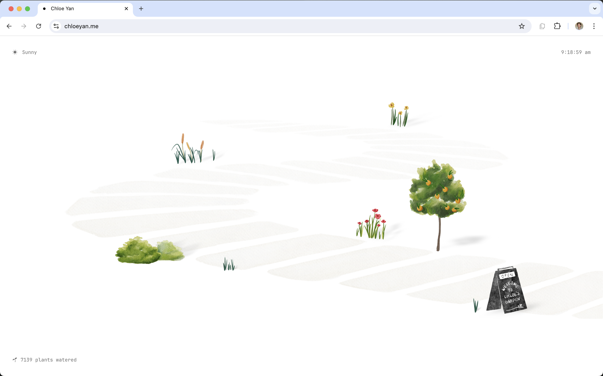

Ongoing Journey - July 2024
Short Cuts Bites Back
Went to a Tate Macre concert, being listening to her non-stop this month, highly recommendI must’ve admitted this somewhere in the blog, till today I still have trouble speaking & comprehending english.
For the past 10 year I would always try to find some shortcuts to go around the problem, pretending that I am fluent in English.
Which, shaped me in unexpected ways:
- I consume almost exclusively Chinese content, even for english podcast/newsletter I usually go find chinese translations
- I became really good(?) at asking questions even when I am uninterested in the answer, I can’t converse as well in English, so I need my counterpart to speak more to fill in the space.
- I write down my thought through intersitual journal, as my memories are allocated towards what people said (so I can refer back / reuse them).
It was never a problem until I recently started learning something almost exclusive in the English community, and find myself in a interesting spot: I am someone who is more comfortable writing in English, and reading/conversing in Chinese -> it takes 3X as long to learn the materials.
So begins my quarter life crisis 🙂🔫
Reflection to me has two goals: change or accept, I want this to be mostly the latter, accepting and understand who I have become. Thinking back on this jounrey, I tend to always want to find shortcuts in life, not realizing they will come and bite back to me someday.
And with that a reflection for change: fundenmental skills (English, PM methdologies, Python etc) I should learn as early as possible, because later on 1) I will be less motivated to learn 2) it would be particually useless as my brain has settled 3) it take extreme effort to change myself again.
Living Graciously
Lemon Tart I got for almost free :)数字游民(cyber hobo?) was a term pretty popular on X, now that I’ve stacked the debuff of graduation jobless and living in SF, I soon to myself living in exactly what was the definition of cyber hobo life lol.
On a very positive note, I found how cheap it is to live a life maintaining a high standard of living quality
Living - Reduced by 40.7%, I started to divde up the original purpose of a ‘house’, now I live in a very cheap 1 bed space (only for sleeping & storage), work in a public co-working space, workout & shower at the gym, and eat through Trader Joe’s grocery & ready to eat meals.
Communting - Reduced by around 30%, I take the combination of bart/muni/bus everyday, and purchased a Lyft bike pass to finish the last mile. The most noticible part is actually communiting time, I was able to commute probably 10% faster even with the reduction in price.
Purchases - I spent quite little on clothes/items but recently I found people on facebook market selling almost new item at 20% of price, which also became a saving :)
The popular saying I always get to hear was ‘happiness and money are seperated’, which I always laugh as I thought this is the saying of these who are previleged. I am changed a little though, perhaps it’s much easier than I thought to live a gracious life with a bit of research.
…
Now none of the saving mentioned above actually became savings, last time I checked my spending with Tilly
it went up by 200+% :)
Friends helps me to stay motivated
Check out the site at chloeyan.meI caught up with 6 friends last week and felt motivated again.
I am somewhat introverted, most time I prefer spending time with myself. When this goes long enough, I often has this feeling of turning into a bystander of this world, makes me more reluctant to act & change my situation
Talking & catching up with friends drags me back to the world though, listening to their updates in life makes me 1) happy for their changes & 2) excited to change myself too
I’ve recently saw a saying that talking with friends is like the universe presenting you with a ‘you’ in the parallel universe, showing you who you can become, and encourage to take a step, I found it to be very kind :)
Remember my mom always say ‘生活大部分都是柴米油盐;, I am fortunate enough to have friends who I get to talk to and push me back to act in life.